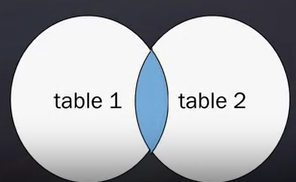
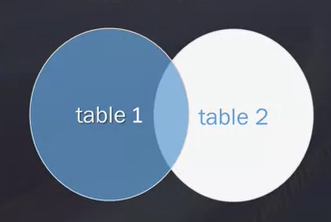

Basics SQL
SQL basics
Statements and syntax
Analysis will use the data above- from the open source Chinook Database. This can be accessed via https://mode.com/sql-tutorial/introduction-to-sql/

Select, From
The general syntax of SELECT statments is:
select FirstName, LastName from Employees ;
| FirstName | LastName |
|---|---|
| Andrew | Adams |
| Nancy | Edwards |
| Jane | Peacock |
| Margaret | Park |
| Steve | Johnson |
| Michael | Mitchell |
| Robert | King |
| Laura | Callahan |
To retrieve all columns from the Employees table we could use “*” instead of specifying individual column names:
select * from Employees ;
| EmployeeId | LastName | FirstName | Title | ReportsTo | BirthDate | HireDate | Address | City | State | Country | PostalCode | Phone | Fax | |
|---|---|---|---|---|---|---|---|---|---|---|---|---|---|---|
| 1 | Adams | Andrew | General Manager | None | 1962-02-18 00:00:00 | 2002-08-14 00:00:00 | 11120 Jasper Ave NW | Edmonton | AB | Canada | T5K 2N1 | +1 (780) 428-9482 | +1 (780) 428-3457 | andrew@chinookcorp.com |
| 2 | Edwards | Nancy | Sales Manager | 1 | 1958-12-08 00:00:00 | 2002-05-01 00:00:00 | 825 8 Ave SW | Calgary | AB | Canada | T2P 2T3 | +1 (403) 262-3443 | +1 (403) 262-3322 | nancy@chinookcorp.com |
| 3 | Peacock | Jane | Sales Support Agent | 2 | 1973-08-29 00:00:00 | 2002-04-01 00:00:00 | 1111 6 Ave SW | Calgary | AB | Canada | T2P 5M5 | +1 (403) 262-3443 | +1 (403) 262-6712 | jane@chinookcorp.com |
| 4 | Park | Margaret | Sales Support Agent | 2 | 1947-09-19 00:00:00 | 2003-05-03 00:00:00 | 683 10 Street SW | Calgary | AB | Canada | T2P 5G3 | +1 (403) 263-4423 | +1 (403) 263-4289 | margaret@chinookcorp.com |
| 5 | Johnson | Steve | Sales Support Agent | 2 | 1965-03-03 00:00:00 | 2003-10-17 00:00:00 | 7727B 41 Ave | Calgary | AB | Canada | T3B 1Y7 | 1 (780) 836-9987 | 1 (780) 836-9543 | steve@chinookcorp.com |
| 6 | Mitchell | Michael | IT Manager | 1 | 1973-07-01 00:00:00 | 2003-10-17 00:00:00 | 5827 Bowness Road NW | Calgary | AB | Canada | T3B 0C5 | +1 (403) 246-9887 | +1 (403) 246-9899 | michael@chinookcorp.com |
| 7 | King | Robert | IT Staff | 6 | 1970-05-29 00:00:00 | 2004-01-02 00:00:00 | 590 Columbia Boulevard West | Lethbridge | AB | Canada | T1K 5N8 | +1 (403) 456-9986 | +1 (403) 456-8485 | robert@chinookcorp.com |
| 8 | Callahan | Laura | IT Staff | 6 | 1968-01-09 00:00:00 | 2004-03-04 00:00:00 | 923 7 ST NW | Lethbridge | AB | Canada | T1H 1Y8 | +1 (403) 467-3351 | +1 (403) 467-8772 | laura@chinookcorp.com |
Where
The WHERE clause can be added to your query to filter results or get specific rows of data. To retrieve data for all rows in the Employees table where the ID is less than 5:
select * from Employees where EmployeeID < 5 ;
| EmployeeId | LastName | FirstName | Title | ReportsTo | BirthDate | HireDate | Address | City | State | Country | PostalCode | Phone | Fax | |
|---|---|---|---|---|---|---|---|---|---|---|---|---|---|---|
| 1 | Adams | Andrew | General Manager | None | 1962-02-18 00:00:00 | 2002-08-14 00:00:00 | 11120 Jasper Ave NW | Edmonton | AB | Canada | T5K 2N1 | +1 (780) 428-9482 | +1 (780) 428-3457 | andrew@chinookcorp.com |
| 2 | Edwards | Nancy | Sales Manager | 1 | 1958-12-08 00:00:00 | 2002-05-01 00:00:00 | 825 8 Ave SW | Calgary | AB | Canada | T2P 2T3 | +1 (403) 262-3443 | +1 (403) 262-3322 | nancy@chinookcorp.com |
| 3 | Peacock | Jane | Sales Support Agent | 2 | 1973-08-29 00:00:00 | 2002-04-01 00:00:00 | 1111 6 Ave SW | Calgary | AB | Canada | T2P 5M5 | +1 (403) 262-3443 | +1 (403) 262-6712 | jane@chinookcorp.com |
| 4 | Park | Margaret | Sales Support Agent | 2 | 1947-09-19 00:00:00 | 2003-05-03 00:00:00 | 683 10 Street SW | Calgary | AB | Canada | T2P 5G3 | +1 (403) 263-4423 | +1 (403) 263-4289 | margaret@chinookcorp.com |
In case of character based columns the values of the predicates in the where clause need to be enclosed in single quotes. To retrieve the data for the Employees names with First Name “Jane” we would issue:
select LastName, FirstName from Employees where FirstName = 'Jane';
| LastName | FirstName |
|---|---|
| Peacock | Jane |
In, Or, Not
In is used when we want to specify a range of conditions.
For example, find values of employees with last name Adams or Park
select FirstName, LastName from Employees
where LastName In ('Adams','Park');
| FirstName | LastName |
|---|---|
| Andrew | Adams |
| Margaret | Park |
Can do a similar thing with the OR operator. When using OR it is often helpful to use with brackets ()
select FirstName, LastName from Employees
where (LastName = 'Adams' OR LastName ='Park');
| FirstName | LastName |
|---|---|
| Andrew | Adams |
| Margaret | Park |
Why the order matters and use of ()
select FirstName, LastName from Employees
where LastName = 'Adams' OR LastName ='Park'
and reportsto=2;
| FirstName | LastName |
|---|---|
| Andrew | Adams |
| Margaret | Park |
select FirstName, LastName from Employees
where (LastName = 'Adams' OR LastName ='Park')
and reportsto=2;
| FirstName | LastName |
|---|---|
| Margaret | Park |
This is because SQL processes AND before OR
In benefits over or - Long list of options - In is faster - Don’t have to consider order with IN - Can contain another select
The not command is represented as <>
for example select the titles not beginning with c
select title from albums
where substr(title,1,1) <> 'C'
| Title |
|---|
| For Those About To Rock We Salute You |
| Balls to the Wall |
| Restless and Wild |
| Let There Be Rock |
| Big Ones |
| Jagged Little Pill |
| Facelift |
| Warner 25 Anos |
| Plays Metallica By Four Cellos |
| Audioslave |
If it is used with IN then we use NOT
for example cities names not starting with a vowel
select distinct city from station
where substr(city,1,1) not in ('a','e','i','o','u')
| City |
|---|
| Kissee Mills |
| Loma Mar |
| Sandy Hook |
| Tipton |
| Turner |
| Slidell |
| Negreet |
Distinct
Find unique values
select distinct artistid from albums
| AlbumId |
|---|
| 1 |
| 2 |
| 3 |
| 4 |
| 5 |
| 6 |
| 7 |
| 8 |
| 9 |
| 10 |
Wildcards
To find parts within a string can use the % wildcard
_ works in a similar way but matches a single character (not supported by DB2)
| Wildcard | Action |
|---|---|
| ‘%ly’ | Find all strings ending ‘ly’ |
| ‘To%’ | Find all strings starting ‘To’ |
| ‘t%@gmail.com’ | Find all gmail address strings starting ‘t’ |
| ’_ill’ | Find all strings ending ill with one other chaharacter e.g. Kill, Bill |
Implementation, to implement use where and like.
Find Names ending in t
select FirstName, LastName from Employees
where FirstName like '%t';
| FirstName | LastName |
|---|---|
| Margaret | Park |
| Robert | King |
Downsides of wildcards:
- Takes longer to run (particularly at end of pattern
- Better to use another operator e.g. =,>,<
Order Data
order by - take name of 1 or more columns - Can use a column not retrieved - The last clause in a statement - Can use a number to represent column number - Add dsc or asc after column name to order acending or descending
Order employee names by last name ascending then last name descending
| FirstName | LastName |
|---|---|
| Andrew | Adams |
| Laura | Callahan |
| Nancy | Edwards |
| Steve | Johnson |
| Robert | King |
| Michael | Mitchell |
| Margaret | Park |
| Jane | Peacock |
Aggregate Functions
averageaverage of a column (avg)countcounts number of valuesminfinds the minimum valuemaxfinds the maximum valuesumsums the column values
select count(trackid) from tracks
where albumid = 10
| count(trackid) |
|---|
| 14 |
Group by and Having
Do the same command as above but with group by, instead of where need to use having after the group by statement
where filters before data is grouped and having after data is grouped
select count(trackid) from tracks
group by albumid
having albumid = 10
| count(trackid) |
|---|
| 14 |
or could get the number of tracks in all albums
select count(trackid) from tracks
group by albumid
| count(trackid) |
|---|
| 10 |
| 1 |
| 3 |
| 8 |
| 15 |
| 13 |
| 12 |
| 14 |
| 8 |
| 14 |
Windowing
A window function performs a calculation across a set of table rows that are somehow related to the current row.
Comparable to the type of calculation that can be done with an aggregate function.
Unlike regular aggregate functions, windowing does not cause rows to become grouped into a single output row — the rows retain their separate identities.
Behind the scenes, the window function is able to access more than just the current row of the query result.
https://www.postgresql.org/docs/9.1/tutorial-window.html
For example, compare each song track’s length to the average salength for each composer
select composer, name,
milliseconds/(1000*60) AS track_length,
avg(milliseconds/(1000*60)) over (partition by composer) AS avg_track_length
from ah_uyekita.chinook_track
| composer | name | track_length | avg_track_length |
|---|---|---|---|
| Aaron Copland | Fanfare for the Common Man | 3.3011 | 3.3011 |
| Aaron Goldberg | OAM’s Blues | 4.4489 | 4.4489 |
| A.Bouchard/J.Bouchard/S.Pearlman | Astronomy | 6.6255 | 6.6255 |
| AC/DC | Let There Be Rock | 6.1109 | 5.1110 |
| AC/DC | Overdose | 6.1553 5.1110 | |
| AC/DC | Problem Child | 5.4173 | 5.1110 |
| AC/DC | Bad Boy Boogie | 4.4621 | 5.1110 |
| AC/DC | Go Down | 5.5197 | 5.1110 |
Window functions
CUME_DISTCalculate the cumulative distribution of a value in a set of valuesDENSE_RANKAssign a rank value to each row within a partition of a result, with no gaps in rank values.FIRST_VALUEGet the value of the first row in an ordered partition of a result set.LAGProvide access to a row at a given physical offset that comes before the current row.LAST_VALUEGet the value of the last row in an ordered partition of a result set.LEADProvide access to a row at a given physical offset that follows the current row.NTILEDistribute rows of an ordered partition into a number of groups or bucketsPERCENT_RANKCalculate the percent rank of a value in a set of values.RANKAssign a rank value to each row within a partition of a result setROW_NUMBERAssign a unique sequential integer to rows within a partition of a result set, the first row starts from 1.
https://www.sqlservertutorial.net/sql-server-window-functions/
Subqueries
These are queries within other queries Which merge data from multiple sources together
get customerid and city when their invoice total is more than 20
select CustomerID, City
from customers
where customerid in (select customerid
from invoices
where total>20)
| CustomerId | City |
|---|---|
| 6 | Prague |
| 26 | Fort Worth |
| 45 | Budapest |
| 46 | Dublin |
How many albums does the band LEd Zeppelin have?
select count(*)
from albums
where artistid IN
(select artistid
from artists
where Name ='Led Zeppelin')
| count(*) |
|---|
| 14 |
Or what are the name of the tracks for the artist Audioslave?
select Name
from tracks
where albumid IN
(select albumid
from albums
where artistid IN
(select artistid
from artists
where Name ='Audioslave'))
| Name |
|---|
| Cochise |
| Show Me How to Live |
| Gasoline |
| What You Are |
| Like a Stone |
| Set It Off |
| Shadow on the Sun |
| I am the Highway |
| Exploder |
| Hypnotize |
Joins
- efficient storage
- easier manipulation
- greater scalability
- logically models a process
- tables are related through common values or keys
- data retrival from multiple tables in one query
- only persist for the duration of the query
Cartesian cross joins
- each row from first table joins with all rows from the other table
- output size of joins in A multiplied rows in B
- computationally taxing
- rarely used
select a.title, ar.name from albums as a
cross join artists as ar
order by a.title
| Title | Name |
|---|---|
| …And Justice For All | AC/DC |
| …And Justice For All | Accept |
total rows = 95425
total rows of albums = 347
total rows of artists = 275
Inner join
- select records that have matching values in both tables
- Use
onto select what joining on - joining more table affects database performance
- Can join multiple tables- no limit

For example get the artist name and title of each album. N.B. albums has columns AlbumID, Title and ArtistID only
select artists.Name, albums.Title
from artists
INNER JOIN albums
on artists.artistid = albums.artistID
| Name | Title |
|---|---|
| AC/DC | For Those About To Rock We Salute You |
| AC/DC | Let There Be Rock |
| Accept | Balls to the Wall |
| Accept | Restless and Wild |
| Aerosmith | Big Ones |
| Alanis Morissette | Jagged Little Pill |
| Alice In Chains | Facelift |
| Antônio Carlos Jobim | Warner 25 Anos |
| Antônio Carlos Jobim | Chill: Brazil (Disc 2) |
| Apocalyptica | Plays Metallica By Four Cellos |
Or as a multiple join
SELECT o.orderId, c.CompanyName, e.LastName
FROM ((orders o INNER JOIN customers c ON o.customerID = c.CustomerID)
`INNER JOIN employees e ON o.EmployeeID = e.EmployeeID);
Self joins
- Takes the table and treats it like two separate tables
- Join the original table to itself
For example, match cities from the same state
select A.city,A.state,B.city, B.state
from station A, station B
where A.city=B.city
and A.state=B.state
order by A.state;
| city A | state A | city B | state B |
|---|---|---|---|
| Seward | AK | Seward | AK |
| Chignik Lagoon | AK | Chignik Lagoon | AK |
| Five Points | AL | Five Points | AL |
| Groveoak | AL | Groveoak | AL |
| Notasulga | AL | Notasulga | AL |
| Jackson | AL | Jackson | AL |
| …. | …. | …. | …. |
Advanced Joins
Left Joins
Returns all records from the left table and the matched records from the righ table
The result is NULL from the right hand side if there is no match
Right joins are the same but from the RHS. Can be converted to left join by reversing the order

For example, find all the customers who have an invoice
select c.FirstNAme, c.LastName, i.InvoiceId
from customers c
LEFT JOIN invoices i on c.customerid = i.customerid
order by c.customerid
| FirstName | LastName | InvoiceId |
|---|---|---|
| Luís | Gonçalves | 98 |
| Luís | Gonçalves | 121 |
| Luís | Gonçalves | 143 |
| Luís | Gonçalves | 195 |
| Luís | Gonçalves | 316 |
| Luís | Gonçalves | 327 |
| Luís | Gonçalves | 382 |
| Leonie | Köhler | 1 |
| Leonie | Köhler | 12 |
| Leonie | Köhler | 67 |
| Leonie | Köhler | 196 |
| Leonie | Köhler | 219 |
| Leonie | Köhler | 241 |
| Leonie | Köhler | 293 |
| François | Tremblay | 99 |
Full outer join
Returns all records where there is a match in either table
“Give me everything”
select c.FirstNAme, c.LastName, i.InvoiceId
from customers c
FULL OUTER JOIN invoices i on c.customerid = i.customerid
order by c.customerid
Unions
Combine two or more select statements - Each select must have the same number of columns - Columns must have similar data types - Columns in the same order - Less commonly used
e.g. combine two string statements, the first a list of occupations and the second a summary of the above
(select concat(name,'(',substr(occupation,1,1),')') from occupations)
union
(select concat('There are a total number of ',count(*),' ',occupation,'s.')
from occupations
group by occupation
order by count(occupation));
Substr
Returns part of a string
substr(string name, string position, number of characters to return)
If string position is negative counts from the end
e.g., find city names that start and end with a vowel
select city from station
where substr(city,1,1) in ('a','e','i','o','u')
and substr(city,-1,1) in ('a','e','i','o','u')
Others
Limit 1 limit the results to 1
concat combine multiple parts
select concat(name, '(', substr(occupation,1,1), ')')
from occupations
round(X,5)
rounds X to 5 decimal places
or round(x) to nearest integer
Mode
Mode seems like a good free way to perform SQL. I’ve yet to work out if the course provided me a link to access datasets or if these are freely available for everyone opeing a new account. The website is not easy to navigate and I only found access to my workspaces from a link I saved and not from links on the website.
https://app.mode.com/thomassimm/reports/e9412b22b846/runs/c4e7c78695f3
Spark SQL
- https://files.training.databricks.com/courses/ucdavis/Lessons.dbc
- Spark SQL and DataFrames and Datasets Guides -SQL Guide from Databricks
- Learning Spark, 2nd Edition (eBook compliments of Databricks).
- Introduction - The Internals of Spark SQL (free gitbook)
Appendix
https://dev.mysql.com/doc/refman/8.0/en/union.html
https://www.w3schools.com/sql/default.asp
https://blog.sqlauthority.com/category/sql-puzzle/
https://sqlzoo.net/wiki/SQL_Tutorial
https://mode.com/sql-tutorial/introduction-to-sql
https://www.postgresql.org/docs/9.1/tutorial.html
https://www.coursera.org/specializations/learn-sql-basics-data-science#courses